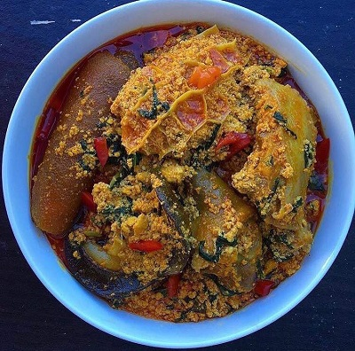

This is an african native soup from Nigeria.It is so delicious and sumptuous.
300Views |
100Reviews |
200Upvotes |
60Downvotes

Ingredients
500g Egusi (Melon) seeds
3 cooking spoons red palm oil
Beef: best cut and Shaki (cow tripe)
Fish: dry fish and stockfish
2 tablespoons ground crayfish
Fish: dry fish and stockfish
2 tablespoons ground crayfish
Pepper and Salt (to taste)
Vegetable: Nigerian pumpkin leaves
3 small stock cubes
Fish: dry fish and stockfish
1 small ogiri okpei (optional)
Directions
Pour the red palm oil into a dry pot and set on the stove to heat. As soon as the oil melts, add the ground egusi and start frying. If the oil is not congealed, add the egusi as soon as the oil is translucent. Mix the ground egusi with oil till every grain of egusi turns yellow.
Start stirring the egusi on low to medium heat. Keep stir-frying for about 10 minutes.
Add the meat/fish stock (water from cooking the fish and meat) little by little while still stirring the egusi. So you add a bit of the stock, stir-fry for some time, add another, stir-fry and so on. When the stock is exhausted and you feel that the soup is still too thick, you can start adding hot water in the same way till you get the consistency you want. If your choice of vegetable is bitter leaf, add it at this time.
Cover the pot and cook for 20 minutes, stirring at intervals. Also, top up the water when necessary. If you don't stir it, it will burn. It takes 30 minutes to cook egusi properly else the soup will not taste nice to someone with authentic Nigerian taste buds. Also, egusi that is not cooked long enough may cause upset stomach. The egusi is done when you notice that the oil has separated from the mix.
Once you are happy that it is done, add the ground crayfish and pepper. Stir and add the Nigerian pumpkin leaves or spinach (alternative).
Stir very well and add the cooked stockfish, shaki and meat.
Add salt if necessary. If it is too thick, add some water to bring it to a consistency you like.